MAURO VALDIVIA, Music Major
I believe what makes this piece of art authentically human is the way the theme of deep spiritual connection and cosmic creation are woven together with the instrumental production. Some of the aspects of this song that only a human can portray are a profound love experience, soul connection and the limitless bounds of what a bond or journey like this can achieve. It also portrays aspects of the untapped human potential.